Origen y definición de la filosofía, sus herramientas y su dimensión social
5. Relación de la filosofía con los demás saberes y con la realidad
Una vez que hemos visto, aunque sea esquemáticamente, qué es filosofía, es momento de subrayar algunos de los aspectos que merece la pena destacar.
En primer lugar, podemos insistir en que la filosofía no es un saber abstracto, intemporal, sobre los arquetipos eternos de las cosas, que consiga aferrar, mediante rigurosos procesos deductivos, las esencias u otras realidades de ese tipo.
La filosofía es más bien el esfuerzo de la humanidad por dar una explicación a los objetos de su experiencia algo más adecuada, exhaustiva, completa, última, que la que consigue por la mera asignación de causas empíricas, a través de las ciencias particulares, naturales o humanas.
Esto no significa que a partir de la filosofía podamos deducir nuestros conocimientos concretos y empíricos sobre la realidad física o las realidades humanas.
De la filosofía no se deduce nada práctico u operativo: de la noción de ser o del principio de no contradicción, poco se puede sacar para las ciencias naturales o las humanas. No hay, pues, un proceso descendente desde la filosofía a las ciencias particulares. Sin embargo, sin la filosofía no se puede hallar una fundamentación adecuada en ningún ámbito de lo real; hay, pues, más bien un tránsito de lo empírico y de lo que nos es dado inmediatamente hacia lo filosófico, su praempírico y fundante. En definitiva, como decía Aristóteles, la filosofía es el esfuerzo por “justificar los fenómenos”, o sea, por dar razón de todo lo que se nos presenta, de la totalidad de nuestra experiencia, indagando por los principios o fundamentos últimos.
Además, eso supraempírico fundante es algo que está operante necesariamente en cualquier justificación racional, en cualquier discurso científico sobre la realidad. De ahí surge la necesidad de la filosofía: ella es la explicitación de esos implícitos, necesariamente presentes; ella es la manifestación de lo que no podemos no pensar, de lo que siempre está presente, aunque implícitamente, en todo discurso racional, sean las estructuras mismas del pensamiento, sean los contenidos últimos de nuestra concepción de la realidad9.
8 “Todos los hombres por naturaleza desean saber”. Con esas palabras, Aristóteles comienza su Metafísica: declarando la radical igualdad de todo ser humano en cuanto ser racional, en cuanto arde en deseo de saber, pues el conocimiento de las últimas cuestiones transforma a todo ser humano.
9 Si juzgando un asesinato cometido hace cinco años, el abogado defensor dice “mi cliente no es culpable, porque entonces se hallaba en otro país”, está presuponiendo el principio de causalidad, el modus tollens (para cometer un crimen hay que estar presente).
De este modo, tomamos conciencia de que la realidad, las cosas, son algo más que pura facticidad y sucesión de facticidades. Su realidad depende más bien de otras causas de carácter no sensible, sin las cuales no es posible pensar los objetos de la experiencia. El desprecio hacia una consideración que busca las fuentes supraempíricas constituyentes de los objetos, de lo real, significa la renuncia a la comprensión del mundo que nos rodea y, lo que es más importante, la pérdida de la racionalidad de nuestra propia vida humana.
Pulsa en las imágenes para ampliarlas y en i para leer las notas.
1. Características de la filosofía
1. Así pues, desde sus orígenes, una de las características singulares de la filosofía es la búsqueda de una explicación distinta a la ofrecida por el mito y las religiones. Frente al mito, circunscrito a la tradición basada en la obediencia ciega, aparece el logos (o razón).
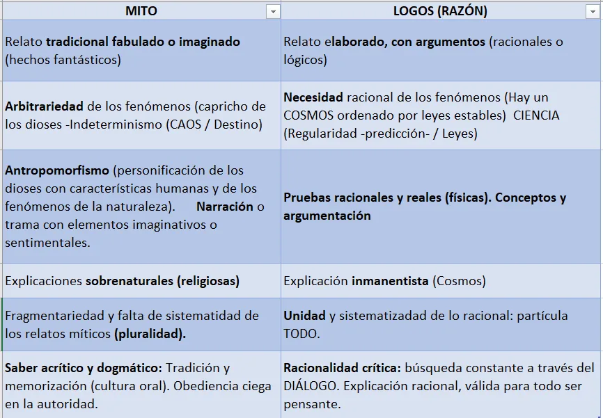
2. La filosofía se define frente al mito, fundamentalmente, por su racionalidad:
1. Teórica, para conocer la realidad.
2. Práctica, como instrumento que nos ayuda en la toma de decisiones sobre nuestras acciones. Su objetivo es transformar la realidad. Esa es la tesis XI sobre Feuerbach* de Marx: “Los filósofos no han hecho más que interpretar el mundo de distintos modos; de lo que se trata es de transformarlo”.
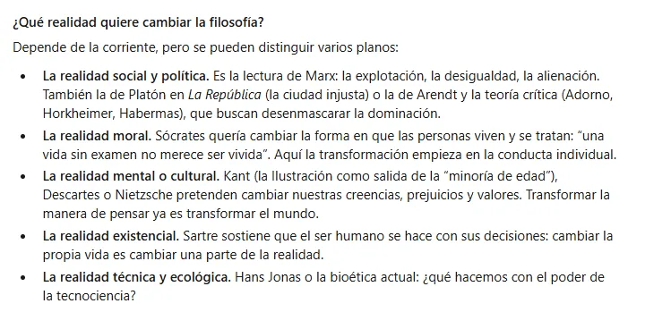
3. La base de la acción racional es
1. una actitud crítica respecto a los conocimientos establecidos,
2. y la argumentación es el instrumento que proporciona seguridad y coherencia a las opiniones y creencias, en un momento en el que todavía no existía la distinción entre filosofía y ciencia.
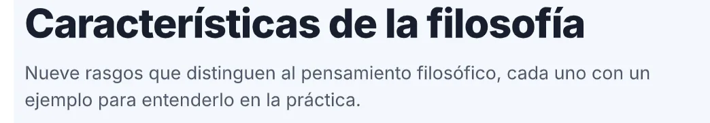
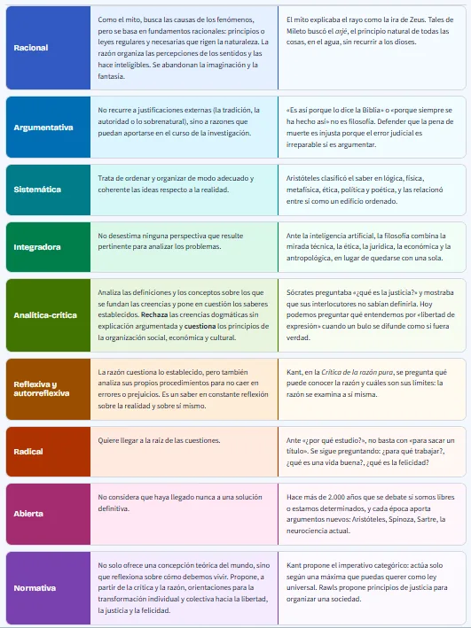
2. Áreas de la filosofía
1. Antropología. Analiza a los seres humanos desde distintas perspectivas, como la biológica, la social, la humanista (filosófica) o la cultural.
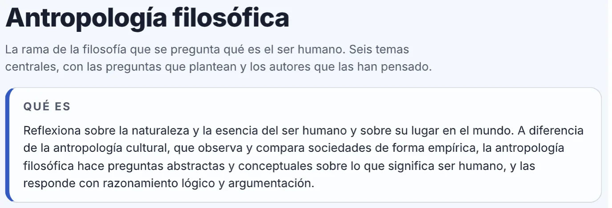
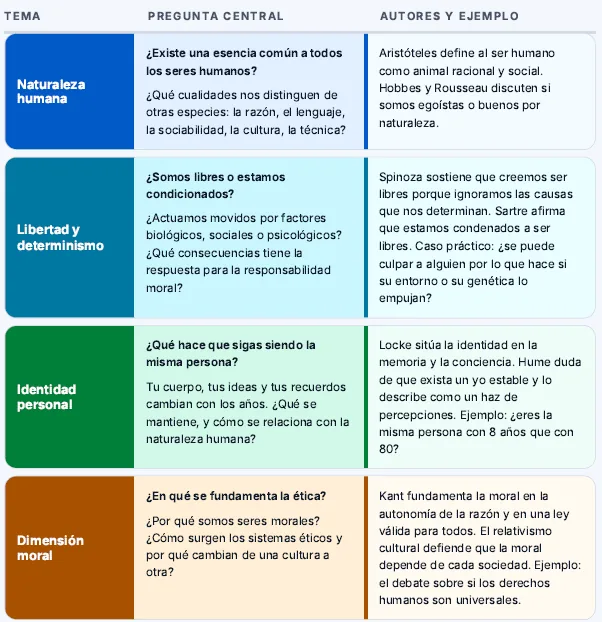
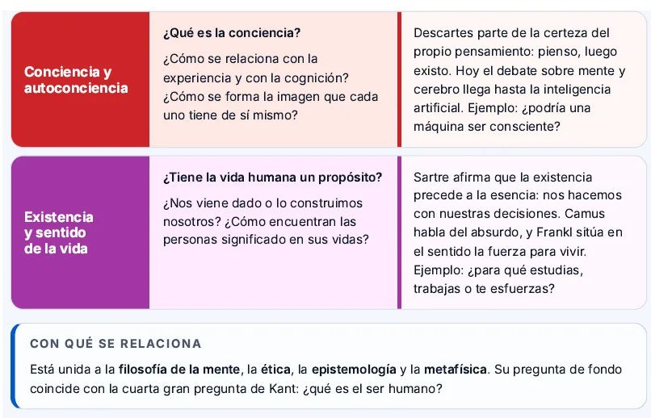
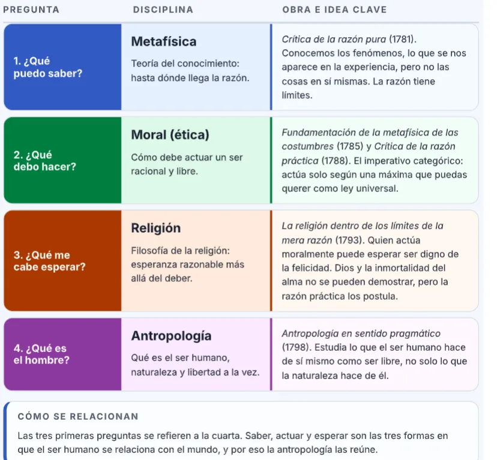
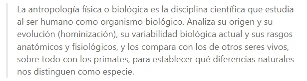
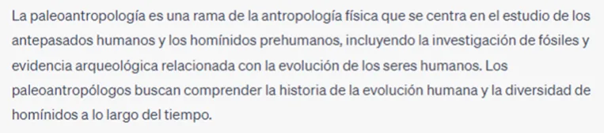
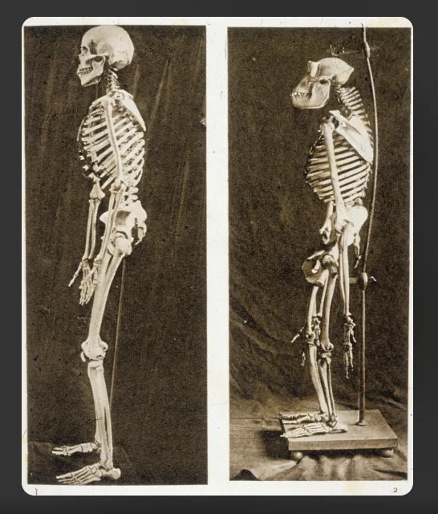
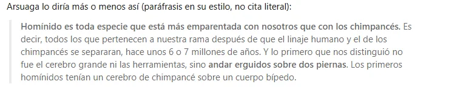
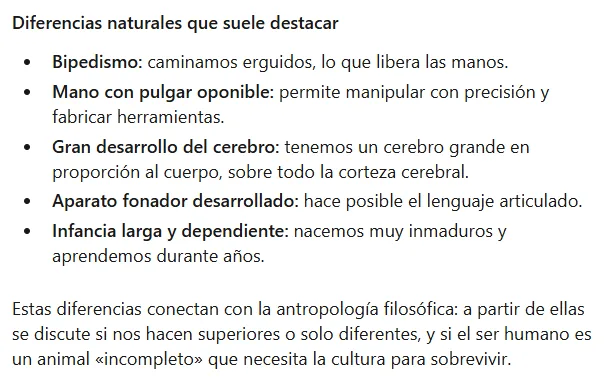
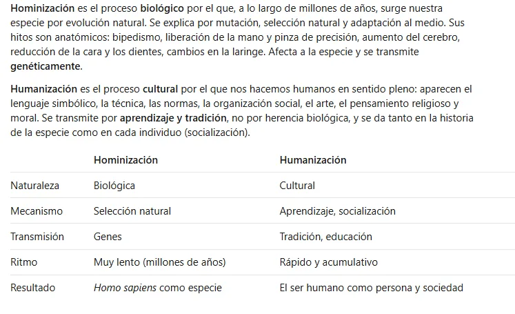
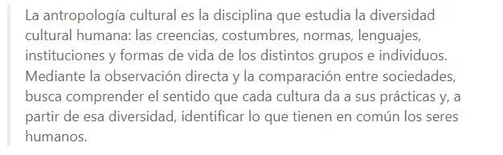
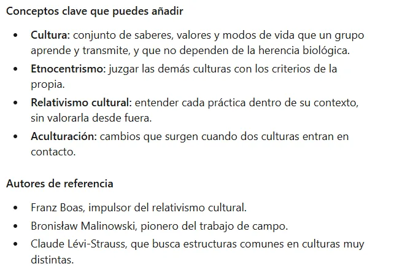
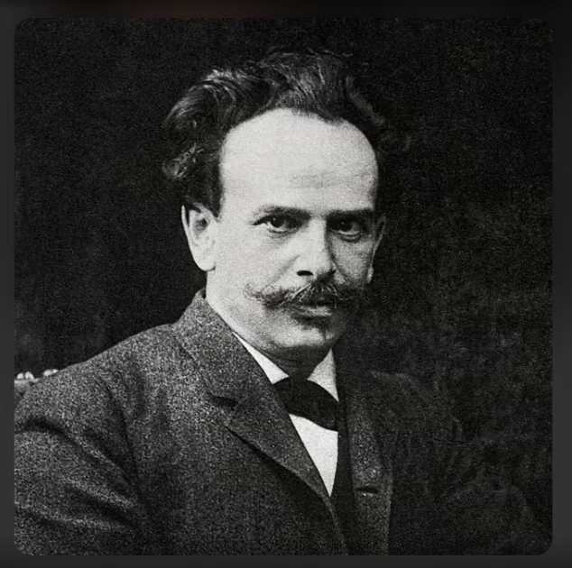
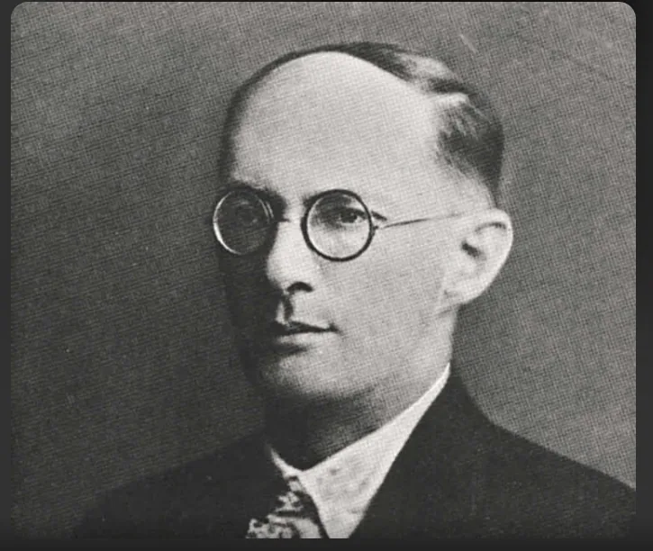
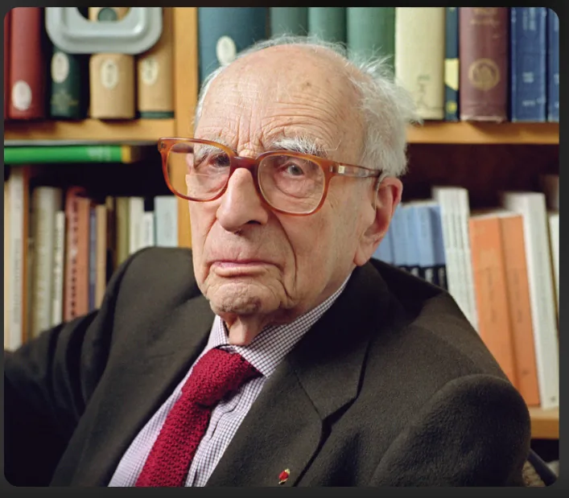
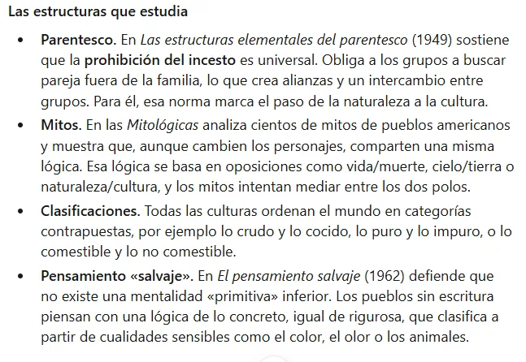
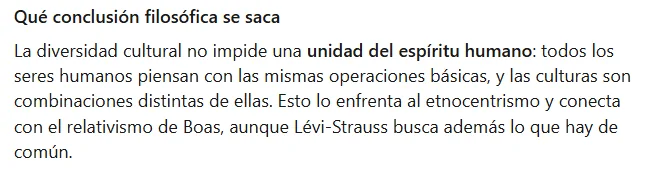
2. Epistemología. Reflexiona sobre los orígenes, la validez y los límites del conocimiento. Para ello, se ocupa de problemas como las circunstancias psicológicas, sociológicas o históricas que llevan a la obtención del conocimiento o cuáles son los criterios de verdad de los mismos.
3. Lógica. Se ocupa de los razonamientos expresados lingüísticamente y estudia su estructura, su forma y su corrección para llegar a la certeza de su validez.
4. Metafísica. Estudia la realidad y las propiedades de todo lo que es o existe. Indaga acerca de lo que es real, intentando distinguirlo de lo meramente aparente. En definitiva, cuáles son las claves de identificación del «ser». No obstante, esta parte de la filosofía -sin duda, la más ardua y abstrusa- ha ido modificando su foco de atención a lo largo de la historia, desplazándose hasta el examen de la realidad y la existencia particular.
5. Ética. Estudia los códigos morales y las normas, su fundamentación, validez y universalidad. Por ello, se centra en los valores, reglas, deberes o virtudes que hacen posible el bienestar de las personas. Los conceptos clave aquí son «bien», «felicidad» o «deber».
6. Política. Se ocupa de los aspectos comunitarios del ser humano, como el origen de las organizaciones sociales, la legitimación de las distintas formas de gobierno o las relaciones entre el Estado y el individuo. La cuestión clave es el concepto de «poder».
7. Estética. Analiza la naturaleza de la belleza y de las creaciones artísticas. Es una parte de la filosofía que también ha ido modificando su objeto de estudio y hoy expande su reflexión a los principios, juicios, experiencias o emociones que tienen que ver con la idea de «belleza», así como con las distintas formas o manifestaciones artísticas.
8. A estas grandes ramas de la filosofía se les han ido añadiendo otras, dado que la reflexión y actitud filosóficas se pueden aplicar a cualquier ámbito de realidad. Así, existe una filosofía del lenguaje, de la ciencia, de la tecnología, del derecho, de la historia, de la mente*...
3. La filosofía y los otros saberes y actividades humanas
Como expresión del saber racional, la filosofía ha estado en contacto con las distintas manifestaciones del conocimiento y las actividades humanas:
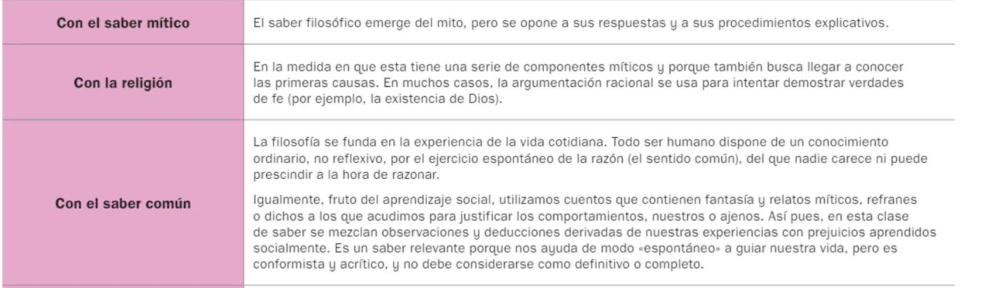
1. Saber vulgar y experiencia
1. La forma más básica y elemental de saber articulado sobre el mundo es nuestra experiencia directa de las cosas. Se trata de una experiencia inmediata, no argumentativa, basada fundamentalmente en la acumulación de nuestras vivencias (de las cosas y circunstancias vividas), que articulamos con cierta coherencia.
Se trata, pues, de un saber vulgar, no ligado a reflexión teórica ni a investigaciones científicas.
Es ese saber que atribuimos a los ancianos o a los que han tenido una vida rica en experiencias.
2. Este saber va...
1. desde las proposiciones más elementales como que el fuego quema o el agua apaga el fuego (hay que tener en cuenta que un niño muy pequeño ni siquiera es consciente de que el fuego quema),
2. hasta nuestras ideas sobre el matrimonio, los hijos, la amistad, el estudio, la profesión
3. … y, en general, cómo hemos de vivir.
3. Los conocimientos más elementales lo solemos llamar saber vulgar, mientras que a los más refinados experiencia, sea individual o colectiva, puesto que no sólo cada persona, sino que una nación entera o un pueblo también han pasado por sus vicisitudes* y tienen su experiencia.
4. Es característica esencial de este tipo de saber el ser esencialmente práctico y particular.
1. Es decir, no es un saber teórico, articulado y justificado racionalmente, sino que es un conocimiento que mira a la acción -a manejarse en el mundo- ,
2. y está vinculado a acontecimientos singulares propios de una persona o un pueblo: no pretende ser vinculante para los demás hombres o naciones. Por eso, continuamente oímos “por mi experiencia, yo que tú haría tal cosa”, pero somos conscientes de que no se trata de algo que necesariamente haya que hacer o que sea así tal como nos dicen.
2. Cosmovisión e ideología
1. El saber experiencial del que hablamos, cuando es de todo un pueblo, queda acuñado en modos de ver la vida y de vivirla: es lo que constituye lo que hoy día se llama visión del mundo o cosmovisión.
13 Desde un punto de vista histórico, las ideologías son las comosvisiones de los gru pos sociales de la segunda mitad del XIX, cuando se fragmentó la sociedad, y no sólo ella, sino el pensamiento, que dejó de ser un esfuerzo de la razón universal para conver tirse en una serie de ideologías o corrientes de pensamiento que no intentan una explica ción válida para todos los hombres, sino una defensa de puntos de vista particulares o de intereses de grupos. De este modo, podemos considerar la segunda mitad del XIX como el inicio de la Edad Contemporánea: los fenómenos culturales, sociales y políticos que se dan en ella duran hasta nuestros días.
💬 Comentario: 12 Estas ideas proceden de Wilhelm Dilthey (alemán, 18331911), que llamó a estas concepciones Weltanschauung, palabra compuesta de Welt (mundo) y Anschauung (mira da, visión). Por eso, es habitual traducirla por cosmovisión.
Esas concepciones generales y prácticas de la realidad y de la vida se las puede llamar también cultura (cultura china, cultura occidental…) y normalmente se transmite de generación en generación, formando lo que se llama tradición. Por tradición (del latín trádere: entregar, transmitir) se entiende el modo en que se transmiten esos conocimientos; de ahí que tomen el nombre de tradición o tradiciones.
2. Un caso particular y muy importante de la cosmovisión es la ideología. Por ideología se entiende una visión del mundo propia de un grupo social, no de toda una nación o pueblo. Se trata, pues, de una cosmovisión ligada a intereses particulares de grupo.
Por eso, no se habla de la ideología china o árabe, sino burguesa, socialista, liberal, cientifista o ecologista. Al ser la cosmovisión de un grupo se presenta como una concepción particular interesada, que sólo la pueden tener los pertenecientes a dicho grupo.
3. Lo decisivo es darse cuenta que toda cosmovisión y, especialmente, toda ideología
14 Dada la carga de subjetividad de las ideología, algunos autores hablan más de “modas” que de ideologías, hasta el punto de que consideran que una caraterística de la ideología es que quienes la asumen no son conscientes de que es ideología; ignoran sus supuestos. Por ejemplo, en los años 70, la moda era hablar de la maravilla que era el pa raíso comunista, de la profundidad de su filosofía, del rigor del materialismo científi co…, pero con la caída del Muro de Berlín desapareció esa moda: el comunismo clásico ha sido olvidado e incluso ahora ni siquiera se lo considra una teoría filosófica, sino más bien una ideología de clase. Semejantemente, en los años de la entreguerras, se puso de moda declarase ateo, con un ateísmo militante, mientras que a partir de los 80 con la re lajación de las tensiones sociales y políticas, la moda es declararse agnóstico o, como mu cho, ateo no militante.
1. no responde a una investigación racional, ni a un planteamiento objetivo,
2. sino a la experiencia de un pueblo o de un grupo social.
1. Se trata, pues, de una concepción subjetiva, que no pretende que sea válida para todo ser pensante, pues depende de las vivencias subjetivas, de los intereses, etc.
2. De ahí, las eternas discusiones entre derecha e izquierda, entre liberales y socialistas, etc., que no tienen nada que ver con los debates científicos.
1. En éstos (en ciencia) se intenta alcanzar la verdad objetiva, saber cómo son las cosas;
2. en las discusiones ideológicas, por el contrario, nada importa la verdad, sólo se busca el consenso operativo, cediendo cada parte en sus exigencias prácticas, pero no en sus ideologías, que no son puestas en cuestión.
3. Frases célebres de los filósofos
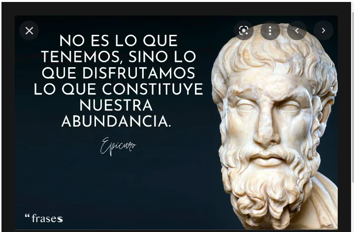
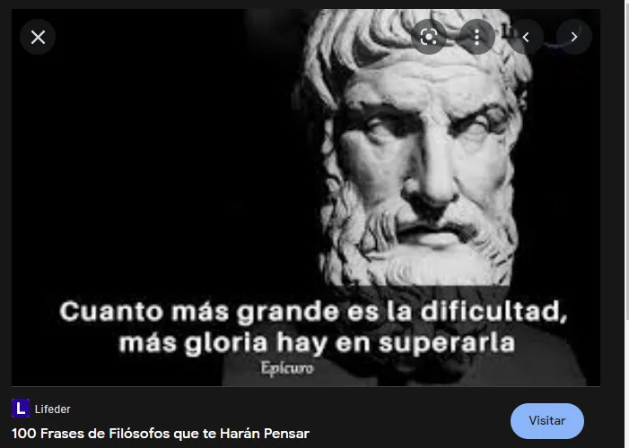
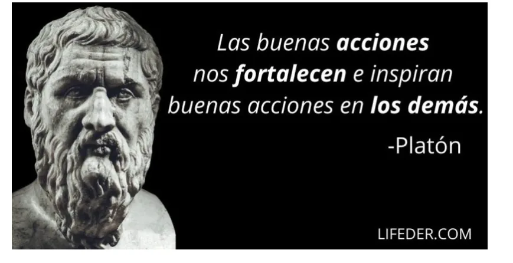
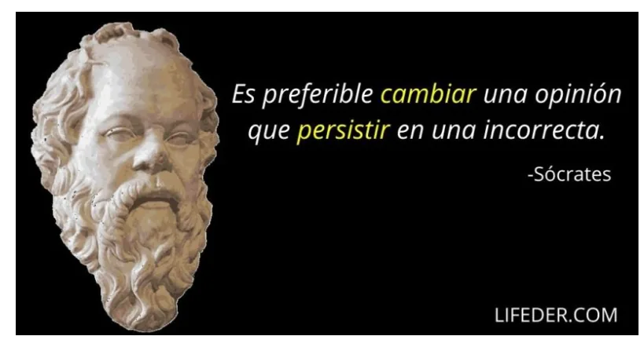
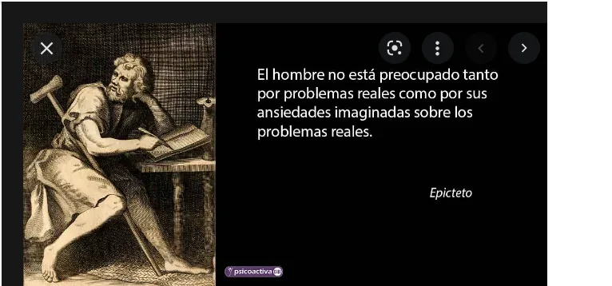
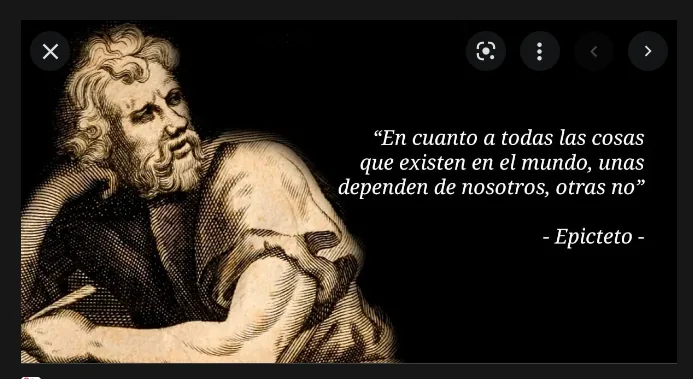
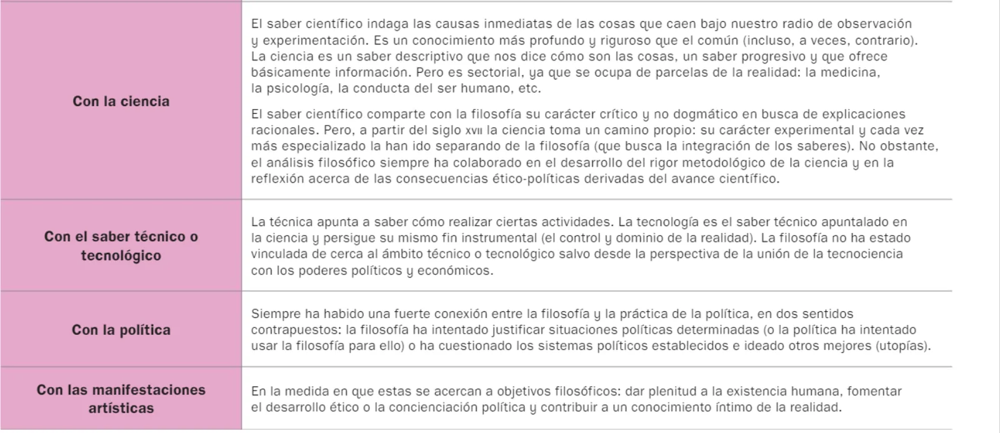
4. Concepciones del saber filosófico
A pesar de las diferencias entre las distintas filosofías, podemos establecer unas concepciones básicas generales y relativamente comunes, que, a su vez, no son excluyentes.
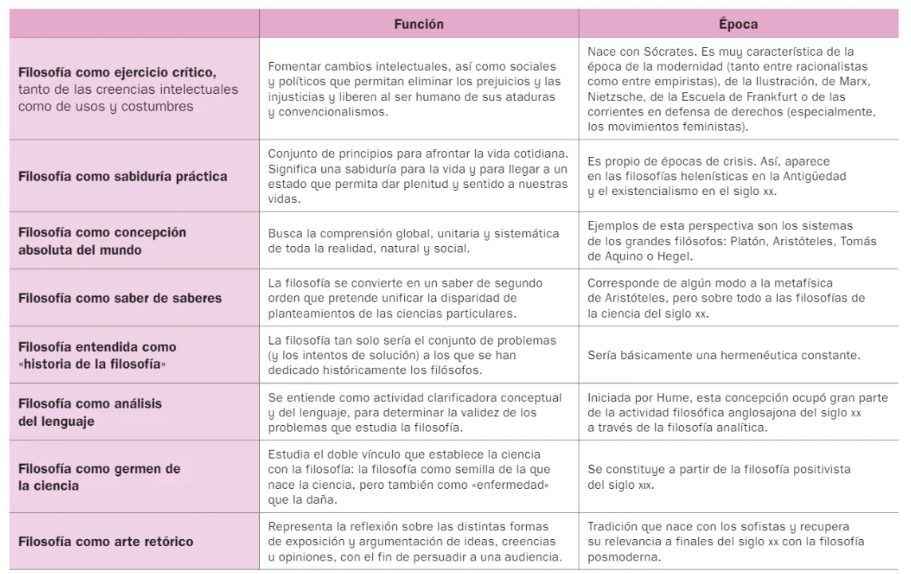
Ampliaciones
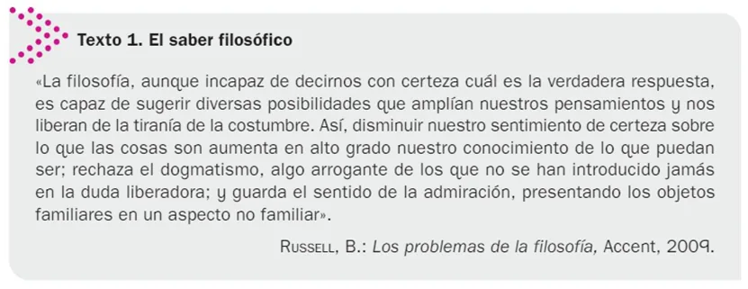
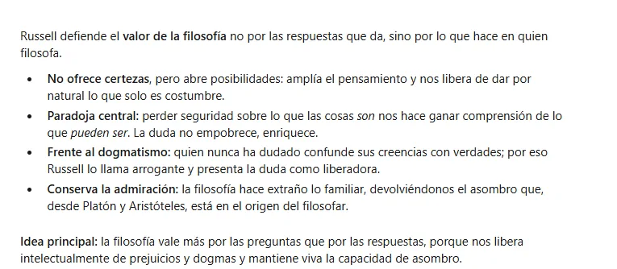
Lecturas recomendadas
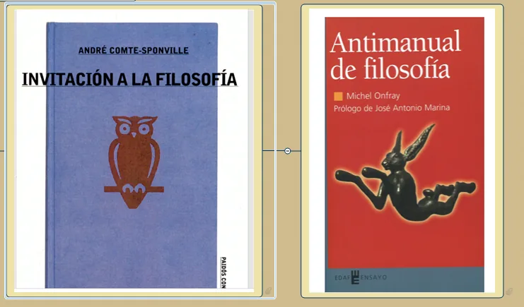
La creación filosófica se plasma principalmente (aunque no de modo exclusivo) en el ensayo, y su dinámica implica defender argumentos. Hacer esto exitosamente requiere apoyar dichos argumentos con evidencias.
Esto quiere decir que para escribir un buen ensayo filosófico es necesario saber
1. consultar fuentes,
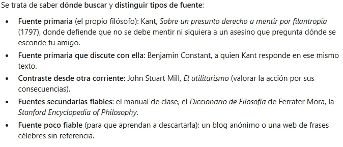
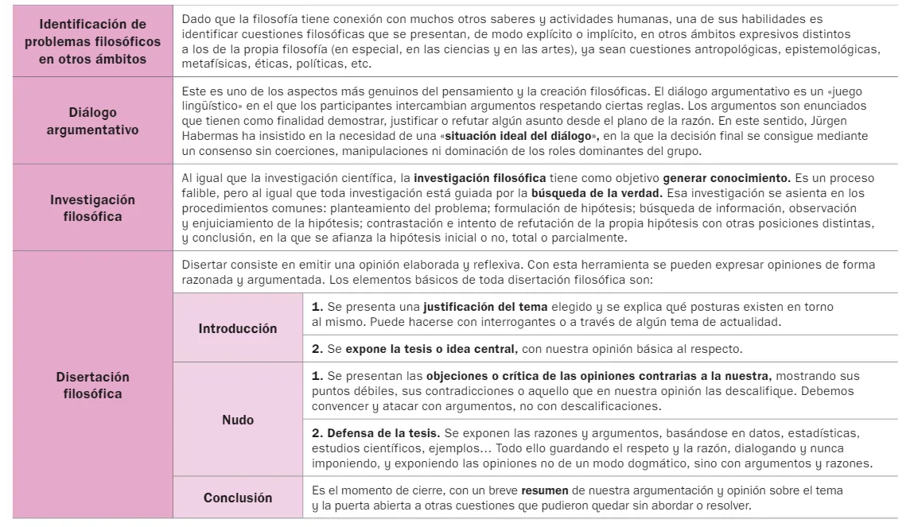
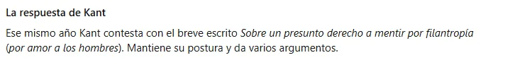
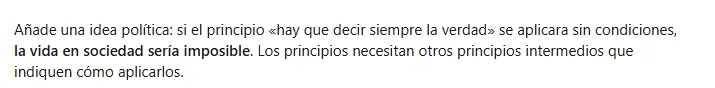
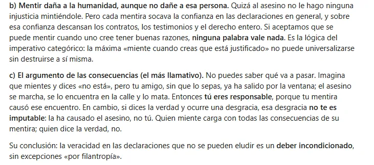
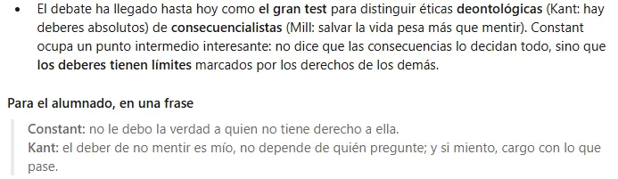
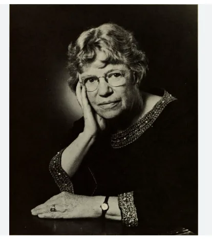
2. incorporarlas dentro de un argumento y
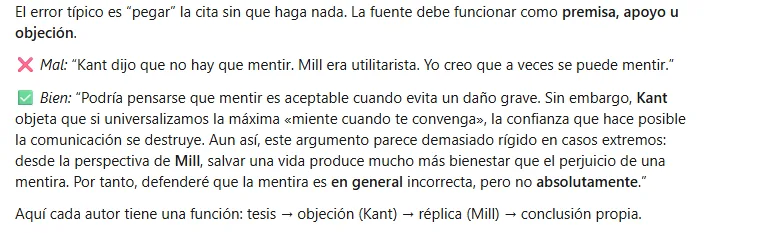
3. referenciarlas de manera correcta
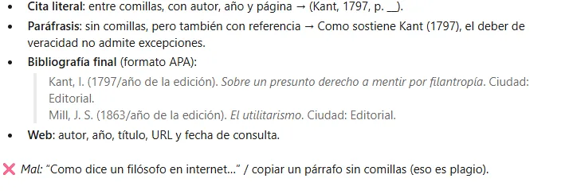
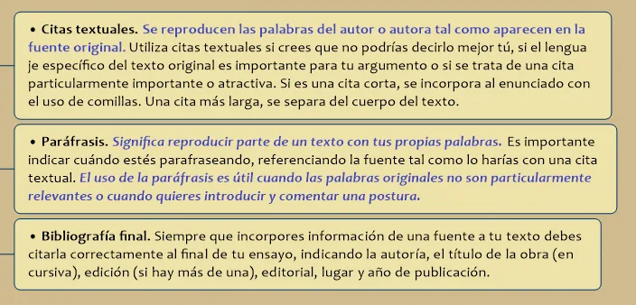
4. y reconocer cuestiones filosóficas en otros ámbitos expresivos distintos a la propia filosofía, Analicemos las herramientas de la filosofía.
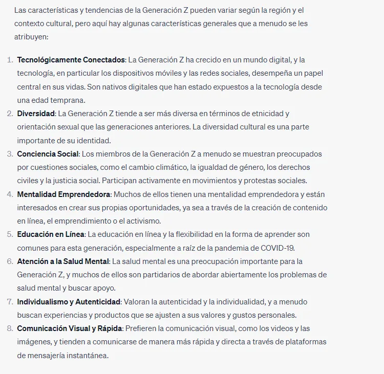
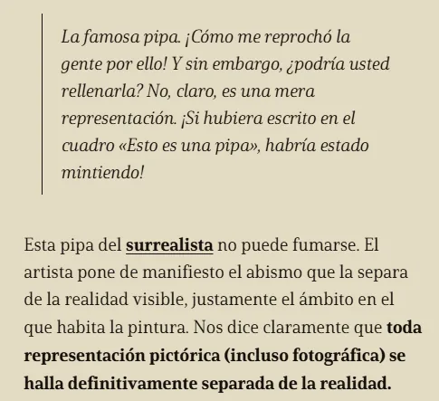
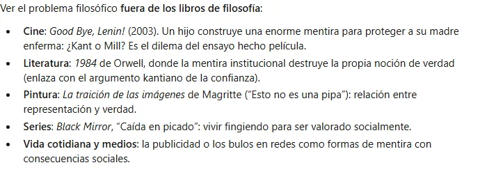
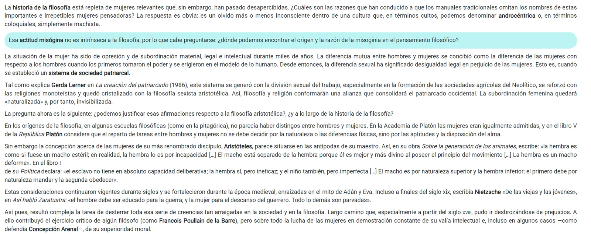
1. Uso y análisis crítico de fuentes
La creación filosófica exige evaluar las fuentes de información, es decir, los documentos, discursos, huellas digitales*, fotos, observaciones o cualquier elemento utilizado para obtener conocimiento. Ello supone un ejercicio crítico para establecer la validez de las fuentes a través del contraste.. Asimismo, las fuentes consultadas deben incorporarse al ensayo a través de:
• Citas textuales. Se reproducen las palabras del autor o autora tal como aparecen en la fuente original. Utiliza citas textuales si crees que no podrías decirlo mejor tú, si el lengua je específico del texto original es importante para tu argumento o si se trata de una cita particularmente importante o atractiva. Si es una cita corta, se incorpora al enunciado con el uso de comillas. Una cita más larga, se separa del cuerpo del texto.
• Paráfrasis. Significa reproducir parte de un texto con tus propias palabras. Es importante indicar cuándo estés parafraseando, referenciando la fuente tal como lo harías con una cita textual. El uso de la paráfrasis es útil cuando las palabras originales no son particularmente relevantes o cuando quieres introducir y comentar una postura.
• Bibliografía final. Siempre que incorpores información de una fuente a tu texto debes citarla correctamente al final de tu ensayo, indicando la autoría, el título de la obra (en cursiva), edición (si hay más de una), editorial, lugar y año de publicación.
2. Comprensión e interpretación de documentos filosóficos
La historia de las ideas filosóficas, la comprensión e interpretación de los textos de esa historia es, sin duda, misión fundamental para un correcto entendimiento de las preocupaciones filosóficas para el desarrollo de un sólido ensayo. Además, constituye un campo idóneo para contribuir a un entendimiento más claro, precio y profundo de las cuestiones de la vida cotidiana.
Es esencial para entender e interpretar textos, por ejemplo, conocer la terminología filosófica (las palabras propias del lenguaje filosófico utilizadas por un autor o autora.
3. Otras herramientas del saber filosófico
2. FILOSOFÍA Y ETNOCENTRISMO
3. La filosofía y la condición de ser mujer
4. Filosofía e infancia
MITO | LOGOS (RAZÓN) |
Relato tradicional fabulado o imaginado (hechos fantásticos) | Relato elaborado, con argumentos (racionales o lógicos) |
Arbitrariedad de los fenómenos (capricho de los dioses -Indeterminismo (CAOS / Destino) | Necesidad racional de los fenómenos (Hay un COSMOS ordenado por leyes estables) CIENCIA (Regularidad -predicción- / Leyes) |
Antropomorfismo (personificación de los dioses con características humanas y de los fenómenos de la naturaleza). Narración o trama con elementos imaginativos o sentimentales. | Pruebas racionales y reales (físicas). Conceptos y argumentación |
Explicaciones sobrenaturales (religiosas) | Explicación inmanentista (Cosmos) |
Fragmentariedad y falta de sistematidad de los relatos míticos (pluralidad). | Unidad y sistematizadad de lo racional: partícula TODO. |
Saber acrítico y dogmático: Tradición y memorización (cultura oral). Obediencia ciega en la autoridad. | Racionalidad crítica: búsqueda constante a través del DIÁLOGO. Explicación racional, válida para todo ser pensante. |
**Sororidad.** Es la solidaridad y el apoyo mutuo entre mujeres frente a la desigualdad que comparten. Viene del latín *soror*, «hermana», y es el equivalente femenino de «fraternidad», palabra que sale de *frater*, «hermano». La idea es dejar de verse como rivales, que es el papel que a menudo les asigna la cultura, y reconocerse como aliadas. La difundió en el ámbito hispano la antropóloga mexicana Marcela Lagarde, y la RAE la recoge desde 2018.
**Consentimiento.** Es el acuerdo libre, consciente y expreso para mantener una relación sexual. Lo importante es que el foco se desplaza. Antes muchas legislaciones exigían probar que hubo violencia o resistencia. Ahora la pregunta es si la persona dijo sí de verdad: el silencio o la falta de resistencia no equivalen a consentir. El consentimiento puede retirarse en cualquier momento, y no lo hay si la persona está inconsciente, bajo intimidación o en una situación de abuso de poder. En España es la base de la Ley Orgánica 10/2022, conocida como «solo sí es sí».
**Techo de cristal.** Son las barreras invisibles que impiden a las mujeres llegar a los puestos más altos: dirección de empresas, cátedras, consejos de administración, altos cargos políticos. Se llama «de cristal» porque ninguna ley lo prohíbe, pero existe. Nace de prejuicios, de redes de contactos masculinas, de horarios incompatibles con los cuidados y de la idea de que el liderazgo es cosa de hombres. Un concepto relacionado es el **suelo pegajoso**, que nombra las tareas y empleos precarios que retienen a muchas mujeres en la base.
**Brecha salarial.** Es la diferencia media entre lo que cobran los hombres y las mujeres. Conviene distinguir dos cosas:
- **Discriminación directa:** cobrar menos por el mismo trabajo. Es ilegal.
- **Brecha estructural:** la parte mayor. Las mujeres hacen más jornadas parciales, reducen su jornada para cuidar, se concentran en sectores peor pagados y suben menos en la jerarquía. Por eso también afecta a sus pensiones.
**Economía de los cuidados.** Es el trabajo de cuidar a niños, mayores, enfermos y personas dependientes, y de mantener el hogar. Sin él, ninguna economía funcionaría, pero no se paga cuando se hace en casa y se paga mal cuando se contrata. Recae sobre todo en las mujeres. Autoras como Silvia Federici defienden que es trabajo real y que debe repartirse entre hombres y mujeres y con el Estado, mediante escuelas infantiles, atención a la dependencia y permisos iguales. De ahí viene el término **corresponsabilidad**.
**Ciberfeminismo.** Tiene dos sentidos. Por un lado, es el uso de internet y las redes como herramienta feminista: campañas como #MeToo o #NiUnaMenos, denuncias que se viralizan y redes de apoyo. Por otro, es la reflexión crítica sobre la tecnología: la poca presencia de mujeres en la informática, los sesgos de los algoritmos y el acoso digital. Su referente teórico es Donna Haraway, autora del *Manifiesto Cíborg* (1985).
¿Quieres que añada estas definiciones al cuadro como glosario desplegable?
MITO | LOGOS (RAZÓN) |
Relato tradicional fabulado o imaginado (hechos fantásticos) | Relato elaborado, con argumentos (racionales o lógicos) |
Arbitrariedad de los fenómenos (capricho de los dioses -Indeterminismo (CAOS / Destino) | Necesidad racional de los fenómenos (Hay un COSMOS ordenado por leyes estables) CIENCIA (Regularidad -predicción- / Leyes) |
Antropomorfismo (personificación de los dioses con características humanas y de los fenómenos de la naturaleza). Narración o trama con elementos imaginativos o sentimentales. | Pruebas racionales y reales (físicas). Conceptos y argumentación |
Explicaciones sobrenaturales (religiosas) | Explicación inmanentista (Cosmos) |
Fragmentariedad y falta de sistematidad de los relatos míticos (pluralidad). | Unidad y sistematizadad de lo racional: partícula TODO. |
Saber acrítico y dogmático: Tradición y memorización (cultura oral). Obediencia ciega en la autoridad. | Racionalidad crítica: búsqueda constante a través del DIÁLOGO. Explicación racional, válida para todo ser pensante. |
**Sororidad.** Es la solidaridad y el apoyo mutuo entre mujeres frente a la desigualdad que comparten. Viene del latín *soror*, «hermana», y es el equivalente femenino de «fraternidad», palabra que sale de *frater*, «hermano». La idea es dejar de verse como rivales, que es el papel que a menudo les asigna la cultura, y reconocerse como aliadas. La difundió en el ámbito hispano la antropóloga mexicana Marcela Lagarde, y la RAE la recoge desde 2018.
**Consentimiento.** Es el acuerdo libre, consciente y expreso para mantener una relación sexual. Lo importante es que el foco se desplaza. Antes muchas legislaciones exigían probar que hubo violencia o resistencia. Ahora la pregunta es si la persona dijo sí de verdad: el silencio o la falta de resistencia no equivalen a consentir. El consentimiento puede retirarse en cualquier momento, y no lo hay si la persona está inconsciente, bajo intimidación o en una situación de abuso de poder. En España es la base de la Ley Orgánica 10/2022, conocida como «solo sí es sí».
**Techo de cristal.** Son las barreras invisibles que impiden a las mujeres llegar a los puestos más altos: dirección de empresas, cátedras, consejos de administración, altos cargos políticos. Se llama «de cristal» porque ninguna ley lo prohíbe, pero existe. Nace de prejuicios, de redes de contactos masculinas, de horarios incompatibles con los cuidados y de la idea de que el liderazgo es cosa de hombres. Un concepto relacionado es el **suelo pegajoso**, que nombra las tareas y empleos precarios que retienen a muchas mujeres en la base.
**Brecha salarial.** Es la diferencia media entre lo que cobran los hombres y las mujeres. Conviene distinguir dos cosas:
- **Discriminación directa:** cobrar menos por el mismo trabajo. Es ilegal.
- **Brecha estructural:** la parte mayor. Las mujeres hacen más jornadas parciales, reducen su jornada para cuidar, se concentran en sectores peor pagados y suben menos en la jerarquía. Por eso también afecta a sus pensiones.
**Economía de los cuidados.** Es el trabajo de cuidar a niños, mayores, enfermos y personas dependientes, y de mantener el hogar. Sin él, ninguna economía funcionaría, pero no se paga cuando se hace en casa y se paga mal cuando se contrata. Recae sobre todo en las mujeres. Autoras como Silvia Federici defienden que es trabajo real y que debe repartirse entre hombres y mujeres y con el Estado, mediante escuelas infantiles, atención a la dependencia y permisos iguales. De ahí viene el término **corresponsabilidad**.
**Ciberfeminismo.** Tiene dos sentidos. Por un lado, es el uso de internet y las redes como herramienta feminista: campañas como #MeToo o #NiUnaMenos, denuncias que se viralizan y redes de apoyo. Por otro, es la reflexión crítica sobre la tecnología: la poca presencia de mujeres en la informática, los sesgos de los algoritmos y el acoso digital. Su referente teórico es Donna Haraway, autora del *Manifiesto Cíborg* (1985).
¿Quieres que añada estas definiciones al cuadro como glosario desplegable?